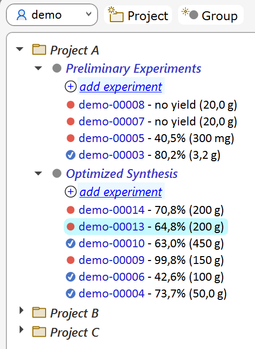
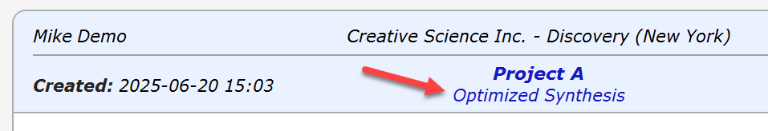
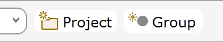
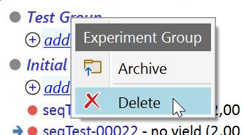
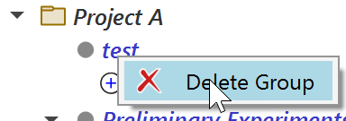
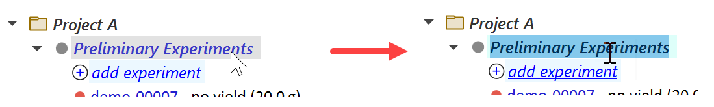
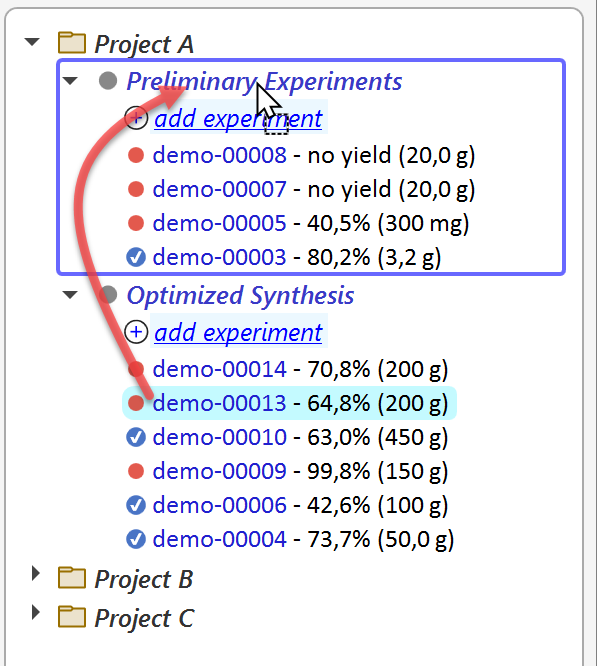
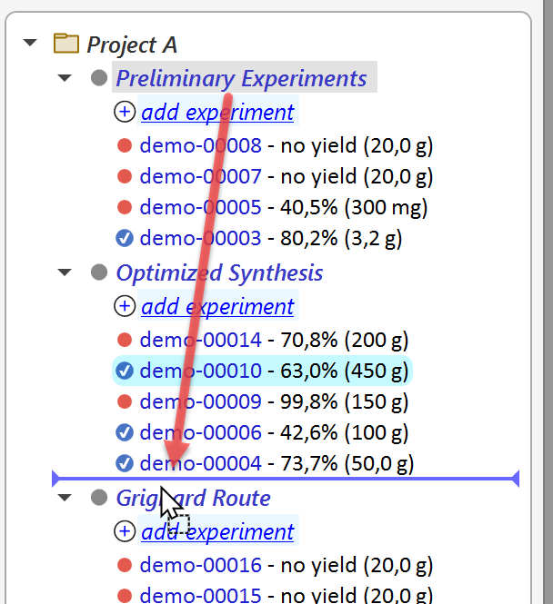

Projects & Groups
General
All experiments are organized into projects and their groups. Experiment groups allow to efficiently structure projects into easily recognizable parts. Thus, you might want to organize your project experiments into groups like 'Initial Experiments' and 'Optimized Synthesis'. Or into groups titled 'Step 1', Step 2', etc.

If more than one group is present in the current project, the group title appears in the current experiment's header:

Archiving Groups
All group experiments can be converted to PDF documents at once and archived into a singe .zip folder. The generated PDF documents adhere to the PDF/A-3 archival standard.

Adding & Deleting Projects and Groups
Projects and groups can be added via the corresponding toolbar buttons located on top of the navigation tree.

Clicking the Group button adds a group to the project of the currently selected experiment. You can also add a group directly to any project by right‑clicking the project in the navigation tree and choosing Add Group from the context menu.
Every new project automatically includes a default experiment group named “All experiments”. You can rename projects and groups at any time by selecting them in the navigation tree followed by clicking their title. Keep in mind that project names must be unique across the entire ELN, while group names only need to be unique within their respective project.


Empty projects and groups can be deleted via their context menus, accessible by right-clicking them. They can't be deleted as long as they contain any experiments.
Renaming Projects and Groups
Projects and groups can be renamed by first selecting their title in the navigation tree, followed by another mouse click to start the edit operation. Double-clicking will not work, since this only expands and collapses child elements.

Editing is finalized by either pressing the RETURN key, or by selecting a different interface element. Pressing the ESC key will undo the current edit operation.
Drag & Drop Operations
Experiments can be moved across groups via drag & drop. In the example below, the experiment demo-00013 is moved from the 'Optimized Synthesis' to the 'Preliminary Experiments' group by dragging its entry over the 'Preliminary Experiments' group title (a rectangle around all group elements appears), and dropping it at this location.

Also Projects and groups can be rearranged via drag & drop. Other than for experiment drag & drop, now an insertion marker appears instead of a group marker when moving over the target location.

In above example, the group 'Preliminary Experiments' is inserted below the 'Optimized Synthesis' group. Drag & drop for projects works in analogy. Please note that groups only can be moved within their project, but not to another one.